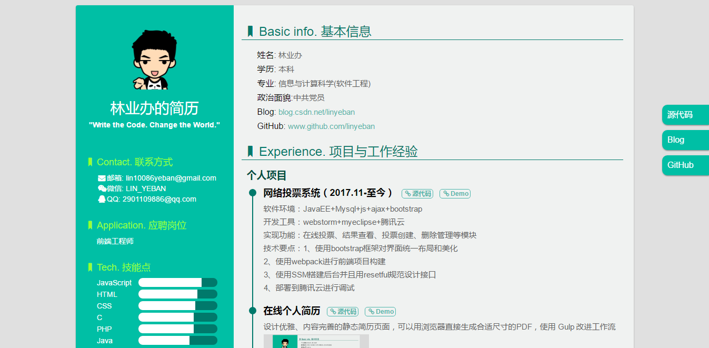
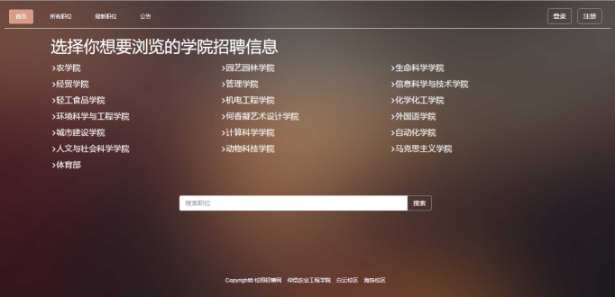
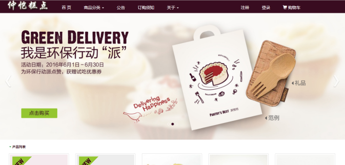

-
- Basic info. 基本信息
- 姓名: 林业办
- 学历: 本科
- 专业: 信息与计算科学(软件工程)
- 政治面貌:中共党员
- Blog: blog.csdn.net/linyeban
- GitHub: www.github.com/linyeban
-
- Experience. 项目经验
个人项目
-
网络投票系统 源代码 Demo
软件环境：JavaEE+Mysql+js+ajax+bootstrap
开发环境：webstorm+myeclipse+腾讯云平台
实现功能：在线投票、结果查看、投票创建、删除管理等模块
技术要点：
1、使用bootstrap框架对界面统一布局和美化
2、使用webpack进行前端项目构建
3、使用SSM搭建后台并且用resetful规范设计接口
4、部署到腾讯云进行调试
-
Html5+CSS3(demo集合) 源代码 Demo
-
实现了html5结合css3的demo，其中CSS3照片墙、CSS3抽屉式、html5时钟等demo
-
-
在线个人简历 源代码 Demo
设计优雅、内容完善的静态简历页面，可以用浏览器直接生成合适尺寸的PDF，使用 Gulp 改进工作流
 -
校园招聘网站 源代码 Demo
软件环境：PHP+Mysql+js+ajax+bootstrap
开发环境：eclipse+EasyPHP+腾讯云平台
功能模块：登录、注册、浏览职位、职位分类、职位详情、搜索职位、添加职位等模块
技术要点：
1、使用bootstrap框架对界面统一布局和美化
2、jQuery实现局部显示内容等功能
3、php结合mysql实现后台数据交互,传递数据过程中使用ajax实现异步更新
4、部署到腾讯云进行调试
 -
校园购物网站 源代码 Demo
软件环境：PHP+Mysql+js+ajax+bootstrap
开发环境：eclipse+EasyPHP+腾讯云
功能模块：首页功能、商品分类、商品列表、购物车、结算中心等模块
技术要点：
1、使用Bootstrap对界面统一布局和美化
2、通过ajax刷新商品列表
3、使用mysql进行数据的关联和增删改查
4、部署到腾讯云进行调试

-
- Skill. 技能清单
Web前端
-
HTML / CSS
能够编写语义化的 HTML，模块化的 CSS，完成较复杂的布局
熟悉 Less / Sass / Autoprefixer 等CSS预处理和后处理方法、工具
-
JavaScript
熟悉原生Javascript，能脱离jQuery等类库编码
能运用模块化、面向对象的方式编程
了解 VueJS 的使用
后端
-
PHP、JavaEE
能运用PHP、JavaEE(SSM)结合mysql实现后台数据交互,传递数据过程中使用ajax实现异步更新
其他
-
其他
熟悉Gulp、webpack 前端自动化工具
了解前端安全、性能优化方面的一些知识
掌握Git、svn等版本控制工具的使用
能够熟练使用 sublime text3、webstorm等开发工具
-
- Educational Background. 教育背景
仲恺农业工程学院
-
信息与计算科学(软件工程) 2013.9-2017.7
主修课程：web程序设计、Java程序设计、Java高级应用、数据结构、数据库原理与应用、软件工程导论、Android程序开发、软件体系结构与设计模式
-
- Technical Qualifications. 技能证书
-
- 全国计算机等级考试: 三级嵌入式
- 驾驶执照: C1驾驶执照
- 外语水平: CTE-4